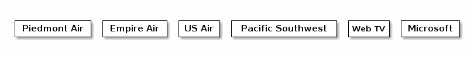
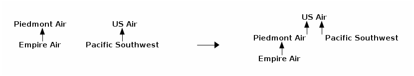

notes33
Table of Contents
Lecture 33
Today's reading: Goodrich & Tamassia, Section 11.4.
DISJOINT SETS
A disjoint sets data structure represents a collection of sets that are disjoint: that is, no item is found in more than one set. The collection of disjoint sets is called a partition, because the items are partitioned among the sets.
Moreover, we work with a universe of items. The universe is made up of all of the items that can be a member of a set. Every item is a member of exactly one set.
For example, suppose the items in our universe are corporations that still exist today or were acquired by other corporations. Our sets are corporations that still exist under their own name. For instance, "Microsoft," "Forethought," and "Web TV" are all members of the "Microsoft" set.
We will limit ourselves to two operations. The first is called a union operation, in which we merge two sets into one. The second is called a find query, in which we ask a question like, "What corporation does Web TV belong to today?" More generally, a "find" query takes an item and tells us which set it is in. We will not support operations that break a set up into two or more sets (not quickly, anyway). Data structures designed to support these operations are called partition or union/find data structures.
Applications of union/find data structures include maze generation (which you'll do in Homework 9) and Kruskal's algorithm for computing the minimum spanning tree of a graph (which you'll implement in Project 3).
Union/find data structures begin with every item in a separate set.

The query "find(Empire Air)" returns "Empire Air". Suppose we take the union of Piedmont Air and Empire Air and called the resulting corporation Piedmont Air. Similarly, we unite Microsoft with Web TV and US Air with Pacific SW.
The query "find(Empire Air)" now returns "Piedmont Air". Suppose we further unite US Air with Piedmont Air.
The query "find(Empire Air)" now returns "US Air". When Microsoft takes over US Air, everything will be in one set and no further mergers will be possible.
List-Based Disjoint Sets and the Quick-Find Algorithm
The obvious data structure for disjoint sets looks like this.
- Each set references a list of the items in that set.
- Each item references the set that contains it.
With this data structure, find operations take O(1) time; hence, we say that list-based disjoint sets use the quick-find algorithm. However, union operations are slow, because when two sets are united, we must walk through one set and relabel all the items so that they reference the other set.
Time prevents us from analyzing this algorithm in detail (but see Goodrich and Tamassia, Section 11.4.3). Instead, let's move on to the less obvious but flatly superior quick-union algorithm.
Tree-Based Disjoint Sets and the Quick-Union Algorithm
In tree-based disjoint sets, union operations take O(1) time, but find operations are slower. However, for any sequence of union and find operations, the quick-union algorithm is faster overall than the quick-find algorithm.
To support fast unions, each set is stored as a general tree. The quick-union data structure comprises a forest (a collection of trees), in which each item is initially the root of its own tree; then trees are merged by union operations. The quick-union data structure is simpler than the general tree structures you have studied so far, because there are no child or sibling references. Every node knows only its parent, and you can only walk up the tree. The true identity of each set is recorded at its root.
Union is a simple O(1) time operation: we simply make the root of one set become a child of the root of the other set. For example, when we form the union of US Air and Piedmont Air:

US Air becomes a set containing four members. However, finding the set to which a given item belongs is not a constant-time operation.
The find operation is performed by following the chain of parent references from an item to the root of its tree. For example, find(Empire Air) will follow the path of references until it reaches US Air. The cost of this operation is proportional to the item's depth in the tree.
These are the basic union and find algorithms, but we'll consider two optimizations that make finds faster. One strategy, called union-by-size, helps the union operation to build shorter trees. The second strategy, called path compression, gives the find operation the power to shorten trees.
Union-by-size is a strategy to keep items from getting too deep by uniting sets intelligently. At each root, we record the size of its tree (i.e. the number of nodes in the tree). When we unite two trees, we make the smaller tree a subtree of the larger one (breaking ties arbitrarily).
Implementing Quick-Union with an Array
Suppose the items are non-negative integers, numbered from zero. We'll use an array to record the parent of each item. If an item has no parent, we'll record the size of its tree. To distinguish it from a parent reference, we'll record the size s as the negative number -s. Initially, every item is the root of its own tree, so we set every array element to -1.
-------------------------------
|-1|-1|-1|-1|-1|-1|-1|-1|-1|-1|
-------------------------------
0 1 2 3 4 5 6 7 8 9
The forest illustrated at left below is represented by the array at right.
8 1 2 -------------------------------
/ \ /|\ | 1|-4|-1| 8| 5| 8| 1| 3|-5| 1|
5 3 9 0 6 -------------------------------
| | 0 1 2 3 4 5 6 7 8 9
4 7
This is a slightly kludgy way to implement tree-based disjoint sets, but it's fast (in terms of the constant hidden in the asymptotic notation).
Let root1 and root2 be two items that are roots of their respective trees. Here is code for the union operation with the union-by-size strategy.
public void union(int root1, int root2) { if (array[root2] < array[root1]) { // root2 has larger tree array[root2] += array[root1]; // update # of items in root2's tree array[root1] = root2; // make root2 parent of root1 } else { // root1 has equal or larger tree array[root1] += array[root2]; // update # of items in root1's tree array[root2] = root1; // make root1 parent of root2 } }
Path Compression
The find() method is equally simple, but we need one more trick to obtain the best possible speed. Suppose a sequence of union operations creates a tall tree, and we perform find() repeatedly on its deepest leaf. Each time we perform find(), we walk up the tree from leaf to root, perhaps at considerable expense. When we perform find() the first time, why not move the leaf up the tree so that it becomes a child of the root? That way, next time we perform find() on the same leaf, it will run much more quickly. Furthermore, why not do the same for every node we encounter as we walk up to the root?
0
/|\ _ 0 _
1 2 3 / /|\ \
/|\ ==find(7)==> 7 4 1 2 3
4 5 6 /| |\
/|\ 8 9 5 6
7 8 9
In the example above, find(7) walks up the tree from 7, discovers that 0 is the root, and then makes 0 be the parent of 4 and 7, so that future find operations on 4, 7, or their descendants will be faster. This technique is called path compression.
Let x be an item whose set we wish to identify. Here is code for find, which returns the identity of the item at the root of the tree.
public int find(int x) { if (array[x] < 0) { return x; // x is the root of the tree; return it } else { // Find out who the root is; compress path by making the root x's parent array[x] = find(array[x]); return array[x]; // Return the root } }
Naming Sets
Union-by-size means that if Microsoft acquires US Air, US Air will be the root of the tree, even though the new conglomorate might still be called Microsoft. What if we want some control over the names of the sets when we perform union() operations?
The solution is to maintain an additional array that maps root items to set names (and perhaps vice versa, depending on the application's needs). For instance, the array "name" might map 0 to Microsoft. We must modify the union() method so that when it unites two sets, it assigns the union an appropriate name.
For many applications, however, we don't care about the name of a set at all; we only want to know if two items x and y are in the same set. This is true in both Homework 9 and Project 3. You only need to run find(x), run find(y), and check if the two roots are the same.
Running Time of Quick-Union
Union operations obviously take Theta(1) time. (Look at the code–no loops or recursion.)
If we use union-by-size, a single find operation can take Theta(log u) worst-case time, where u is the number of union operations that took place prior to the find. Path compression does not improve this worst-case time, but it improves the average running time substantially–although a find operation can take Theta(log u) time, path compression will make that operation fast if you do it again. The average running time of find and union operations in the quick-union data structure is so close to a constant that it's hardly worth mentioning that, in a rigorous asymptotic sense, it's slightly slower.
The bottom line: a sequence of f find and u union operations (in any order and possibly interleaved) takes Theta(u + f alpha(f + u, u)) time in the worst case. alpha is an extremely slowly-growing function known as the inverse Ackermann function.
When I say "extremely slowly-growing function", I mean "comically slowly- growing function." The inverse Ackermann function is never larger than 4 for any values of f and u you could ever use (though it does grow arbitrarily large–for unimaginably gigantic values of f and u). Hence, for all practical purposes (but not on the Final Exam), you should think of quick-union as having find operations that run, on average, in constant time.